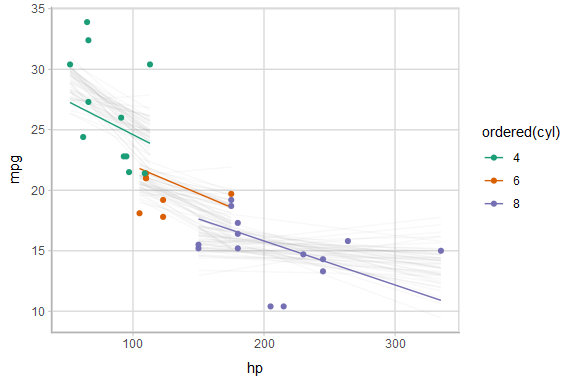
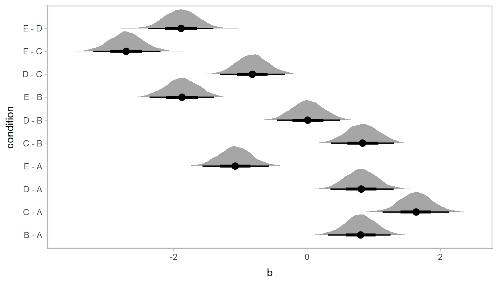
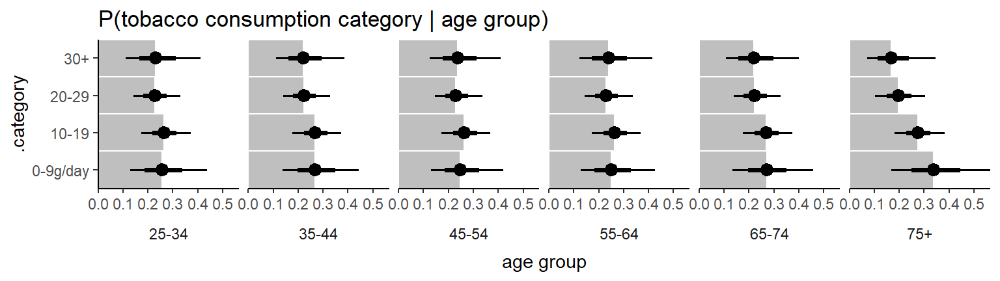

Extracting and visualizing tidy draws from rstanarm models
Matthew Kay
2020-06-01
Source:vignettes/tidy-rstanarm.Rmd
tidy-rstanarm.RmdIntroduction
This vignette describes how to use the tidybayes package to extract tidy data frames of draws from posterior distributions of model variables, fits, and predictions from rstanarm. For a more general introduction to tidybayes and its use on general-purpose Bayesian modeling languages (like Stan and JAGS), see vignette(“tidybayes”).
Setup
The following libraries are required to run this vignette:
library(magrittr) library(dplyr) library(purrr) library(forcats) library(tidyr) library(modelr) library(tidybayes) library(ggplot2) library(ggstance) library(cowplot) library(rstan) library(rstanarm) library(RColorBrewer) library(gganimate) theme_set(theme_tidybayes() + panel_border())
These options help Stan run faster:
rstan_options(auto_write = TRUE) options(mc.cores = parallel::detectCores())
Example dataset
To demonstrate tidybayes, we will use a simple dataset with 10 observations from 5 conditions each:
set.seed(5)
n = 10
n_condition = 5
ABC =
tibble(
condition = rep(c("A","B","C","D","E"), n),
response = rnorm(n * 5, c(0,1,2,1,-1), 0.5)
)A snapshot of the data looks like this:
head(ABC, 10)
## # A tibble: 10 x 2
## condition response
## <chr> <dbl>
## 1 A -0.420
## 2 B 1.69
## 3 C 1.37
## 4 D 1.04
## 5 E -0.144
## 6 A -0.301
## 7 B 0.764
## 8 C 1.68
## 9 D 0.857
## 10 E -0.931This is a typical tidy format data frame: one observation per row. Graphically:
ABC %>% ggplot(aes(y = condition, x = response)) + geom_point()

Model
Let’s fit a hierarchical model with shrinkage towards a global mean:
m = stan_lmer(response ~ (1|condition), data = ABC, prior = normal(0, 1, autoscale = FALSE), prior_aux = student_t(3, 0, 1, autoscale = FALSE), adapt_delta = .99)
The results look like this:
m## stan_lmer
## family: gaussian [identity]
## formula: response ~ (1 | condition)
## observations: 50
## ------
## Median MAD_SD
## (Intercept) 0.6 0.4
##
## Auxiliary parameter(s):
## Median MAD_SD
## sigma 0.6 0.1
##
## Error terms:
## Groups Name Std.Dev.
## condition (Intercept) 1.15
## Residual 0.57
## Num. levels: condition 5
##
## ------
## * For help interpreting the printed output see ?print.stanreg
## * For info on the priors used see ?prior_summary.stanreg
Extracting draws from a fit in tidy-format using spread_draws
Now that we have our results, the fun begins: getting the draws out in a tidy format! First, we’ll use the get_variables function to get a list of raw model variables names so that we know what variables we can extract from the model:
## [1] "(Intercept)" "b[(Intercept) condition:A]"
## [3] "b[(Intercept) condition:B]" "b[(Intercept) condition:C]"
## [5] "b[(Intercept) condition:D]" "b[(Intercept) condition:E]"
## [7] "sigma" "Sigma[condition:(Intercept),(Intercept)]"
## [9] "accept_stat__" "stepsize__"
## [11] "treedepth__" "n_leapfrog__"
## [13] "divergent__" "energy__"Here, (Intercept) is the global mean, and the b parameters are offsets from that mean for each condition. Given these parameters:
b[(Intercept) condition:A]b[(Intercept) condition:B]b[(Intercept) condition:C]b[(Intercept) condition:D]b[(Intercept) condition:E]
We might want a data frame where each row is a draw from either b[(Intercept) condition:A], b[(Intercept) condition:B], ...:C], ...:D], or ...:E], and where we have columns indexing which chain/iteration/draw the row came from and which condition (A to E) it is for. That would allow us to easily compute quantities grouped by condition, or generate plots by condition using ggplot, or even merge draws with the original data to plot data and posteriors.
The workhorse of tidybayes is the spread_draws function, which does this extraction for us. It includes a simple specification format that we can use to extract model variables and their indices into tidy-format data frames.
Gathering variable indices into a separate column in a tidy format data frame
Given a parameter like this:
b[(Intercept) condition:D]
We can provide spread_draws with a column specification like this:
b[term,group]
Where term corresponds to (Intercept) and group to condition:D. There is nothing too magical about what spread_draws does with this specification: under the hood, it splits the parameter indices by commas and spaces (you can split by other characters by changing the sep argument). It lets you assign columns to the resulting indices in order. So b[(Intercept) condition:D] has indices (Intercept) and condition:D, and spread_draws lets us extract these indices as columns in the resulting tidy data frame of draws from b:
m %>% spread_draws(b[term,group]) %>% head(10)
## Warning: `combine()` is deprecated as of dplyr 1.0.0.
## Please use `vctrs::vec_c()` instead.
## This warning is displayed once every 8 hours.
## Call `lifecycle::last_warnings()` to see where this warning was generated.## # A tibble: 10 x 6
## # Groups: term, group [1]
## term group b .chain .iteration .draw
## <chr> <chr> <dbl> <int> <int> <int>
## 1 (Intercept) condition:A -0.378 1 1 1
## 2 (Intercept) condition:A -0.268 1 2 2
## 3 (Intercept) condition:A -0.147 1 3 3
## 4 (Intercept) condition:A -0.0394 1 4 4
## 5 (Intercept) condition:A -0.0419 1 5 5
## 6 (Intercept) condition:A -0.187 1 6 6
## 7 (Intercept) condition:A -0.508 1 7 7
## 8 (Intercept) condition:A -0.516 1 8 8
## 9 (Intercept) condition:A -0.624 1 9 9
## 10 (Intercept) condition:A -0.226 1 10 10We can choose whatever names we want for the index columns; e.g.:
m %>% spread_draws(b[t,g]) %>% head(10)
## # A tibble: 10 x 6
## # Groups: t, g [1]
## t g b .chain .iteration .draw
## <chr> <chr> <dbl> <int> <int> <int>
## 1 (Intercept) condition:A -0.378 1 1 1
## 2 (Intercept) condition:A -0.268 1 2 2
## 3 (Intercept) condition:A -0.147 1 3 3
## 4 (Intercept) condition:A -0.0394 1 4 4
## 5 (Intercept) condition:A -0.0419 1 5 5
## 6 (Intercept) condition:A -0.187 1 6 6
## 7 (Intercept) condition:A -0.508 1 7 7
## 8 (Intercept) condition:A -0.516 1 8 8
## 9 (Intercept) condition:A -0.624 1 9 9
## 10 (Intercept) condition:A -0.226 1 10 10But the more descriptive and less cryptic names from the previous example are probably preferable.
In this particular model, there is only one term ((Intercept)), thus we could omit that index altogether to just get each group and the value of b for the corresponding condition:
m %>% spread_draws(b[,group]) %>% head(10)
## # A tibble: 10 x 5
## # Groups: group [1]
## group b .chain .iteration .draw
## <chr> <dbl> <int> <int> <int>
## 1 condition:A -0.378 1 1 1
## 2 condition:A -0.268 1 2 2
## 3 condition:A -0.147 1 3 3
## 4 condition:A -0.0394 1 4 4
## 5 condition:A -0.0419 1 5 5
## 6 condition:A -0.187 1 6 6
## 7 condition:A -0.508 1 7 7
## 8 condition:A -0.516 1 8 8
## 9 condition:A -0.624 1 9 9
## 10 condition:A -0.226 1 10 10Since all the groups in this case are from the condition factor, we may also want to separate out a column just containing the corresponding condition (A, B, C, etc). We can do that using tidyr::separate:
m %>%
spread_draws(b[,group]) %>%
separate(group, c("group", "condition"), ":") %>%
head(10)## # A tibble: 10 x 6
## group condition b .chain .iteration .draw
## <chr> <chr> <dbl> <int> <int> <int>
## 1 condition A -0.378 1 1 1
## 2 condition A -0.268 1 2 2
## 3 condition A -0.147 1 3 3
## 4 condition A -0.0394 1 4 4
## 5 condition A -0.0419 1 5 5
## 6 condition A -0.187 1 6 6
## 7 condition A -0.508 1 7 7
## 8 condition A -0.516 1 8 8
## 9 condition A -0.624 1 9 9
## 10 condition A -0.226 1 10 10Alternatively, we could change the sep argument to spread_draws to also split on : (sep is a regular expression). Note: This works in this example, but will not work well on rstanarm models where interactions between factors are used as grouping levels in a multilevel model, thus : is not included in the default separators.
m %>% spread_draws(b[,group,condition], sep = "[, :]") %>% head(10)
## # A tibble: 10 x 6
## # Groups: group, condition [1]
## group condition b .chain .iteration .draw
## <chr> <chr> <dbl> <int> <int> <int>
## 1 condition A -0.378 1 1 1
## 2 condition A -0.268 1 2 2
## 3 condition A -0.147 1 3 3
## 4 condition A -0.0394 1 4 4
## 5 condition A -0.0419 1 5 5
## 6 condition A -0.187 1 6 6
## 7 condition A -0.508 1 7 7
## 8 condition A -0.516 1 8 8
## 9 condition A -0.624 1 9 9
## 10 condition A -0.226 1 10 10Note: If you have used spread_draws with a raw sample from Stan or JAGS, you may be used to using recover_types before spread_draws to get index column values back (e.g. if the index was a factor). This is not necessary when using spread_draws on rstanarm models, because those models already contain that information in their variable names. For more on recover_types, see vignette(“tidybayes”).
Point summaries and intervals
With simple model variables
tidybayes provides a family of functions for generating point summaries and intervals from draws in a tidy format. These functions follow the naming scheme [median|mean|mode]_[qi|hdi], for example, median_qi, mean_qi, mode_hdi, and so on. The first name (before the _) indicates the type of point summary, and the second name indicates the type of interval. qi yields a quantile interval (a.k.a. equi-tailed interval, central interval, or percentile interval) and hdi yields a highest (posterior) density interval. Custom point or interval functions can also be applied using the point_interval function.
For example, we might extract the draws corresponding to the posterior distributions of the overall mean and standard deviation of observations:
m %>% spread_draws(`(Intercept)`, sigma) %>% head(10)
## # A tibble: 10 x 5
## .chain .iteration .draw `(Intercept)` sigma
## <int> <int> <int> <dbl> <dbl>
## 1 1 1 1 0.277 0.530
## 2 1 2 2 0.280 0.531
## 3 1 3 3 0.269 0.533
## 4 1 4 4 0.106 0.526
## 5 1 5 5 0.370 0.545
## 6 1 6 6 0.564 0.543
## 7 1 7 7 0.526 0.561
## 8 1 8 8 0.558 0.551
## 9 1 9 9 0.993 0.522
## 10 1 10 10 0.483 0.609Like with b[term,group], this gives us a tidy data frame. If we want the median and 95% quantile interval of the variables, we can apply median_qi:
m %>% spread_draws(`(Intercept)`, sigma) %>% median_qi(`(Intercept)`, sigma)
## # A tibble: 1 x 9
## `(Intercept)` `(Intercept).lower` `(Intercept).upper` sigma sigma.lower sigma.upper .width .point .interval
## <dbl> <dbl> <dbl> <dbl> <dbl> <dbl> <dbl> <chr> <chr>
## 1 0.629 -0.364 1.57 0.561 0.462 0.699 0.95 median qiWe can specify the columns we want to get medians and intervals from, as above, or if we omit the list of columns, median_qi will use every column that is not a grouping column or a special column (like .chain, .iteration, or .draw). Thus in the above example, (Intercept) and sigma are redundant arguments to median_qi because they are also the only columns we gathered from the model. So we can simplify this to:
m %>% spread_draws(`(Intercept)`, sigma) %>% median_qi()
## # A tibble: 1 x 9
## `(Intercept)` `(Intercept).lower` `(Intercept).upper` sigma sigma.lower sigma.upper .width .point .interval
## <dbl> <dbl> <dbl> <dbl> <dbl> <dbl> <dbl> <chr> <chr>
## 1 0.629 -0.364 1.57 0.561 0.462 0.699 0.95 median qiIf you would rather have a long-format list of intervals, use gather_draws instead:
m %>% gather_draws(`(Intercept)`, sigma) %>% median_qi()
## # A tibble: 2 x 7
## .variable .value .lower .upper .width .point .interval
## <chr> <dbl> <dbl> <dbl> <dbl> <chr> <chr>
## 1 (Intercept) 0.629 -0.364 1.57 0.95 median qi
## 2 sigma 0.561 0.462 0.699 0.95 median qiFor more on gather_draws, see vignette(“tidybayes”).
With indexed variables
When we have a model variable with one or more indices, such as b, we can apply median_qi (or other functions in the point_interval family) as we did before:
m %>% spread_draws(b[,group]) %>% median_qi()
## # A tibble: 5 x 7
## group b .lower .upper .width .point .interval
## <chr> <dbl> <dbl> <dbl> <dbl> <chr> <chr>
## 1 condition:A -0.438 -1.40 0.592 0.95 median qi
## 2 condition:B 0.360 -0.647 1.39 0.95 median qi
## 3 condition:C 1.19 0.218 2.24 0.95 median qi
## 4 condition:D 0.371 -0.595 1.44 0.95 median qi
## 5 condition:E -1.51 -2.50 -0.512 0.95 median qiHow did median_qi know what to aggregate? Data frames returned by spread_draws are automatically grouped by all index variables you pass to it; in this case, that means spread_draws groups its results by group. median_qi respects those groups, and calculates the point summaries and intervals within all groups. Then, because no columns were passed to median_qi, it acts on the only non-special (.-prefixed) and non-group column, b. So the above shortened syntax is equivalent to this more verbose call:
m %>% spread_draws(b[,group]) %>% group_by(group) %>% # this line not necessary (done by spread_draws) median_qi(b) # b is not necessary (it is the only non-group column)
## # A tibble: 5 x 7
## group b .lower .upper .width .point .interval
## <chr> <dbl> <dbl> <dbl> <dbl> <chr> <chr>
## 1 condition:A -0.438 -1.40 0.592 0.95 median qi
## 2 condition:B 0.360 -0.647 1.39 0.95 median qi
## 3 condition:C 1.19 0.218 2.24 0.95 median qi
## 4 condition:D 0.371 -0.595 1.44 0.95 median qi
## 5 condition:E -1.51 -2.50 -0.512 0.95 median qiCombining variables with different indices in a single tidy format data frame
spread_draws and gather_draws support extracting variables that have different indices into the same data frame. Indices with the same name are automatically matched up, and values are duplicated as necessary to produce one row per all combination of levels of all indices. For example, we might want to calculate the mean within each condition (call this condition_mean). In this model, that mean is the intercept ((Intercept)) plus the effect for a given condition (b).
We can gather draws from (Intercept) and b together in a single data frame:
m %>% spread_draws(`(Intercept)`, b[,group]) %>% head(10)
## # A tibble: 10 x 6
## # Groups: group [5]
## .chain .iteration .draw `(Intercept)` group b
## <int> <int> <int> <dbl> <chr> <dbl>
## 1 1 1 1 0.277 condition:A -0.378
## 2 1 1 1 0.277 condition:B 0.356
## 3 1 1 1 0.277 condition:C 1.50
## 4 1 1 1 0.277 condition:D 0.848
## 5 1 1 1 0.277 condition:E -1.02
## 6 1 2 2 0.280 condition:A -0.268
## 7 1 2 2 0.280 condition:B 0.514
## 8 1 2 2 0.280 condition:C 1.75
## 9 1 2 2 0.280 condition:D 0.915
## 10 1 2 2 0.280 condition:E -0.899Within each draw, (Intercept) is repeated as necessary to correspond to every index of b. Thus, the mutate function from dplyr can be used to find their sum, condition_mean (which is the mean for each condition):
m %>% spread_draws(`(Intercept)`, b[,group]) %>% mutate(condition_mean = `(Intercept)` + b) %>% median_qi(condition_mean)
## # A tibble: 5 x 7
## group condition_mean .lower .upper .width .point .interval
## <chr> <dbl> <dbl> <dbl> <dbl> <chr> <chr>
## 1 condition:A 0.199 -0.134 0.546 0.95 median qi
## 2 condition:B 1.00 0.663 1.34 0.95 median qi
## 3 condition:C 1.84 1.48 2.17 0.95 median qi
## 4 condition:D 1.01 0.672 1.36 0.95 median qi
## 5 condition:E -0.875 -1.23 -0.524 0.95 median qimedian_qi uses tidy evaluation (see vignette("tidy-evaluation", package = "rlang")), so it can take column expressions, not just column names. Thus, we can simplify the above example by moving the calculation of condition_mean from mutate into median_qi:
m %>% spread_draws(`(Intercept)`, b[,group]) %>% median_qi(condition_mean = `(Intercept)` + b)
## # A tibble: 5 x 7
## group condition_mean .lower .upper .width .point .interval
## <chr> <dbl> <dbl> <dbl> <dbl> <chr> <chr>
## 1 condition:A 0.199 -0.134 0.546 0.95 median qi
## 2 condition:B 1.00 0.663 1.34 0.95 median qi
## 3 condition:C 1.84 1.48 2.17 0.95 median qi
## 4 condition:D 1.01 0.672 1.36 0.95 median qi
## 5 condition:E -0.875 -1.23 -0.524 0.95 median qiPlotting points and intervals
Plotting point summaries and with one interval is straightforward using the geom_pointinterval or geom_pointintervalh geoms:
m %>% spread_draws(`(Intercept)`, b[,group]) %>% median_qi(condition_mean = `(Intercept)` + b) %>% ggplot(aes(y = group, x = condition_mean, xmin = .lower, xmax = .upper)) + geom_pointintervalh()

Intervals with multiple probability levels
median_qi and its sister functions can also produce an arbitrary number of probability intervals by setting the .width = argument:
m %>% spread_draws(`(Intercept)`, b[,group]) %>% median_qi(condition_mean = `(Intercept)` + b, .width = c(.95, .8, .5))
## # A tibble: 15 x 7
## group condition_mean .lower .upper .width .point .interval
## <chr> <dbl> <dbl> <dbl> <dbl> <chr> <chr>
## 1 condition:A 0.199 -0.134 0.546 0.95 median qi
## 2 condition:B 1.00 0.663 1.34 0.95 median qi
## 3 condition:C 1.84 1.48 2.17 0.95 median qi
## 4 condition:D 1.01 0.672 1.36 0.95 median qi
## 5 condition:E -0.875 -1.23 -0.524 0.95 median qi
## 6 condition:A 0.199 -0.0149 0.417 0.8 median qi
## 7 condition:B 1.00 0.779 1.22 0.8 median qi
## 8 condition:C 1.84 1.61 2.06 0.8 median qi
## 9 condition:D 1.01 0.794 1.23 0.8 median qi
## 10 condition:E -0.875 -1.11 -0.652 0.8 median qi
## 11 condition:A 0.199 0.0850 0.311 0.5 median qi
## 12 condition:B 1.00 0.886 1.12 0.5 median qi
## 13 condition:C 1.84 1.72 1.95 0.5 median qi
## 14 condition:D 1.01 0.900 1.12 0.5 median qi
## 15 condition:E -0.875 -0.995 -0.753 0.5 median qiThe results are in a tidy format: one row per group and uncertainty interval width (.width). This facilitates plotting. For example, assigning -.width to the size aesthetic will show all intervals, making thicker lines correspond to smaller intervals. The geom_pointintervalh geom automatically sets the xmin, xmax, and size aesthetics appropriately based on the .lower, .upper, and .width columns in the data to produce plots of points with multiple probability levels:
m %>% spread_draws(`(Intercept)`, b[,group]) %>% median_qi(condition_mean = `(Intercept)` + b, .width = c(.95, .66)) %>% ggplot(aes(y = group, x = condition_mean)) + geom_pointintervalh()

Intervals with densities
To see the density along with the intervals, we can use stat_eyeh (horizontal “eye plots”, which combine intervals with violin plots), or stat_halfeyeh (horizontal interval + density plots):
m %>% spread_draws(`(Intercept)`, b[,group]) %>% mutate(condition_mean = `(Intercept)` + b) %>% ggplot(aes(y = group, x = condition_mean)) + stat_halfeyeh()

Or say you want to annotate portions of the densities in color; the fill aesthetic can vary within a slab in all geoms and stats in the geom_slabinterval() family, including stat_halfeyeh(). For example, if you want to annotate a domain-specific region of practical equivalence (ROPE), you could do something like this:
m %>%
spread_draws(`(Intercept)`, b[,group]) %>%
mutate(condition_mean = `(Intercept)` + b) %>%
ggplot(aes(y = group, x = condition_mean, fill = stat(abs(x) < .8))) +
stat_halfeyeh() +
geom_vline(xintercept = c(-.8, .8), linetype = "dashed") +
scale_fill_manual(values = c("gray80", "skyblue"))
Other visualizations of distributions: stat_slabinterval
There are a variety of additional stats for visualizing distributions in the geom_slabinterval() family of stats and geoms:

See vignette("slabinterval") for an overview.
Posterior fits
Rather than calculating conditional means manually as in the previous example, we could use add_fitted_draws, which is analogous to rstanarm::posterior_linpred (giving posterior draws from the model’s linear predictor, in this case, posterior distributions of conditional means), but uses a tidy data format. We can combine it with modelr::data_grid to first generate a grid describing the fits we want, then transform that grid into a long-format data frame of draws from posterior fits:
ABC %>% data_grid(condition) %>% add_fitted_draws(m) %>% head(10)
## # A tibble: 10 x 6
## # Groups: condition, .row [1]
## condition .row .chain .iteration .draw .value
## <chr> <int> <int> <int> <int> <dbl>
## 1 A 1 NA NA 1 -0.101
## 2 A 1 NA NA 2 0.0121
## 3 A 1 NA NA 3 0.122
## 4 A 1 NA NA 4 0.0662
## 5 A 1 NA NA 5 0.328
## 6 A 1 NA NA 6 0.377
## 7 A 1 NA NA 7 0.0180
## 8 A 1 NA NA 8 0.0416
## 9 A 1 NA NA 9 0.369
## 10 A 1 NA NA 10 0.257To plot this example, we’ll also show the use of stat_pointintervalh instead of geom_pointintervalh, which summarizes draws into point summaries and intervals within ggplot:
ABC %>% data_grid(condition) %>% add_fitted_draws(m) %>% ggplot(aes(x = .value, y = condition)) + stat_pointintervalh(.width = c(.66, .95))

Quantile dotplots
Intervals are nice if the alpha level happens to line up with whatever decision you are trying to make, but getting a shape of the posterior is better (hence eye plots, above). On the other hand, making inferences from density plots is imprecise (estimating the area of one shape as a proportion of another is a hard perceptual task). Reasoning about probability in frequency formats is easier, motivating quantile dotplots (Kay et al. 2016, Fernandes et al. 2018), which also allow precise estimation of arbitrary intervals (down to the dot resolution of the plot, 100 in the example below).
Within the slabinterval family of geoms in tidybayes is the dots and dotsinterval family, which automatically determine appropriate bin sizes for dotplots and can calculate quantiles from samples to construct quantile dotplots. stat_dotsh() is the horizontal variant designed for use on samples:
ABC %>% data_grid(condition) %>% add_fitted_draws(m) %>% ggplot(aes(x = .value, y = condition)) + stat_dotsh(quantiles = 100)

The idea is to get away from thinking about the posterior as indicating one canonical point or interval, but instead to represent it as (say) 100 approximately equally likely points.
Posterior predictions
Where add_fitted_draws is analogous to rstanarm::posterior_linpred, add_predicted_draws is analogous to rstanarm::posterior_predict, giving draws from the posterior predictive distribution.
Here is an example of posterior predictive distributions plotted using stat_slabh():
ABC %>% data_grid(condition) %>% add_predicted_draws(m) %>% ggplot(aes(x = .prediction, y = condition)) + stat_slabh()

We could also use tidybayes::stat_intervalh to plot predictive bands alongside the data:
ABC %>% data_grid(condition) %>% add_predicted_draws(m) %>% ggplot(aes(y = condition, x = .prediction)) + stat_intervalh() + geom_point(aes(x = response), data = ABC) + scale_color_brewer()

Altogether, data, posterior predictions, and posterior distributions of the means:
grid = ABC %>% data_grid(condition) fits = grid %>% add_fitted_draws(m) preds = grid %>% add_predicted_draws(m) ABC %>% ggplot(aes(y = condition, x = response)) + stat_intervalh(aes(x = .prediction), data = preds) + stat_pointintervalh(aes(x = .value), data = fits, .width = c(.66, .95), position = position_nudge(y = -0.3)) + geom_point() + scale_color_brewer()

Fit/prediction curves
To demonstrate drawing fit curves with uncertainty, let’s fit a slightly naive model to part of the mtcars dataset:
m_mpg = stan_glm(mpg ~ hp * cyl, data = mtcars)
We can plot fit curves with probability bands:
mtcars %>% group_by(cyl) %>% data_grid(hp = seq_range(hp, n = 51)) %>% add_fitted_draws(m_mpg) %>% ggplot(aes(x = hp, y = mpg, color = ordered(cyl))) + stat_lineribbon(aes(y = .value)) + geom_point(data = mtcars) + scale_fill_brewer(palette = "Greys") + scale_color_brewer(palette = "Set2")

Or we can sample a reasonable number of fit lines (say 100) and overplot them:
mtcars %>% group_by(cyl) %>% data_grid(hp = seq_range(hp, n = 101)) %>% add_fitted_draws(m_mpg, n = 100) %>% ggplot(aes(x = hp, y = mpg, color = ordered(cyl))) + geom_line(aes(y = .value, group = paste(cyl, .draw)), alpha = .1) + geom_point(data = mtcars) + scale_color_brewer(palette = "Dark2")

Or we can create animated hypothetical outcome plots (HOPs) of fit lines:
set.seed(123456) # to keep the example small we use 20 frames, # but something like 100 would be better ndraws = 20 p = mtcars %>% group_by(cyl) %>% data_grid(hp = seq_range(hp, n = 101)) %>% add_fitted_draws(m_mpg, n = ndraws) %>% ggplot(aes(x = hp, y = mpg, color = ordered(cyl))) + geom_line(aes(y = .value, group = paste(cyl, .draw))) + geom_point(data = mtcars) + scale_color_brewer(palette = "Dark2") + transition_states(.draw, 0, 1) + shadow_mark(future = TRUE, color = "gray50", alpha = 1/20) animate(p, nframes = ndraws, fps = 2.5, width = 432, height = 288, res = 96, dev = "png", type = "cairo")

Or, for posterior predictions (instead of fits), we can go back to probability bands:
mtcars %>% group_by(cyl) %>% data_grid(hp = seq_range(hp, n = 101)) %>% add_predicted_draws(m_mpg) %>% ggplot(aes(x = hp, y = mpg, color = ordered(cyl), fill = ordered(cyl))) + stat_lineribbon(aes(y = .prediction), .width = c(.95, .80, .50), alpha = 1/4) + geom_point(data = mtcars) + scale_fill_brewer(palette = "Set2") + scale_color_brewer(palette = "Dark2")

This can get difficult to judge by group, so could be better to facet into multiple plots. Fortunately, since we are using ggplot, that functionality is built in:
mtcars %>% group_by(cyl) %>% data_grid(hp = seq_range(hp, n = 101)) %>% add_predicted_draws(m_mpg) %>% ggplot(aes(x = hp, y = mpg)) + stat_lineribbon(aes(y = .prediction), .width = c(.99, .95, .8, .5), color = brewer.pal(5, "Blues")[[5]]) + geom_point(data = mtcars) + scale_fill_brewer() + facet_grid(. ~ cyl, space = "free_x", scales = "free_x")

Comparing levels of a factor
If we wish compare the means from each condition, compare_levels facilitates comparisons of the value of some variable across levels of a factor. By default it computes all pairwise differences.
Let’s demonstrate compare_levels with another plotting geom, stat_halfeyeh, which gives horizontal “half-eye” plots, combining intervals with a density plot:
#N.B. the syntax for compare_levels is experimental and may change m %>% spread_draws(b[,,condition], sep = "[, :]") %>% compare_levels(b, by = condition) %>% ggplot(aes(y = condition, x = b)) + stat_halfeyeh()

If you prefer “caterpillar” plots, ordered by something like the mean of the difference, you can reorder the factor before plotting:
#N.B. the syntax for compare_levels is experimental and may change m %>% spread_draws(b[,,condition], sep = "[, :]") %>% compare_levels(b, by = condition) %>% ungroup() %>% mutate(condition = reorder(condition, b)) %>% ggplot(aes(y = condition, x = b)) + stat_halfeyeh() + geom_vline(xintercept = 0, linetype = "dashed")

Ordinal models
Ordinal model with categorical predictor
Here’s an ordinal model with a categorical predictor:
data(esoph) m_esoph_rs = stan_polr(tobgp ~ agegp, data = esoph, prior = R2(0.25), prior_counts = rstanarm::dirichlet(1))
The rstanarm::posterior_linpred function for ordinal regression models in rstanarm returns only the link-level prediction for each draw (in contrast to brms::fitted.brmsfit, which returns one prediction per category for ordinal models, see the ordinal regression examples in vignette("tidy-brms")). The philosophy of tidybayes is to tidy whatever format is output by a model, so in keeping with that philosophy, when applied to ordinal rstanarm models, add_fitted_draws just returns the link-level prediction (Note: setting scale = "response" for such models will not usually make sense).
For example, here is a plot of the link-level fit:
esoph %>% data_grid(agegp) %>% add_fitted_draws(m_esoph_rs, scale = "linear") %>% ggplot(aes(x = as.numeric(agegp), y = .value)) + stat_lineribbon(color = "red") + scale_fill_brewer(palette = "Greys")

This can be hard to interpret. To turn this into predicted probabilities on a per-category basis, we have to use the fact that an ordinal logistic regression defines the probability of an outcome in category \(j\) or less as:
\[ \textrm{logit}\left[Pr(Y\le j)\right] = \alpha_j - \beta x \]
Thus, the probability of category \(j\) is:
\[ \begin{align} Pr(Y = j) &= Pr(Y \le j) - Pr(Y \le j - 1)\\ &= \textrm{logit}^{-1}(\alpha_j - \beta x) - \textrm{logit}^{-1}(\alpha_{j-1} - \beta x) \end{align} \]
To derive these values, we need two things:
The \(\alpha_j\) values. These are threshold parameters fitted by the model. For convenience, if there are \(k\) levels, we will take \(\alpha_k = +\infty\), since the probability of being in the top level or below it is 1.
The \(\beta x\) values. These are just the
.valuecolumn returned byadd_fitted_draws.
The thresholds in rstanarm are coefficients with names containing |, indicating which categories they are thresholds between. We can see those parameters in the list of variables in the model:
get_variables(m_esoph_rs)
## [1] "agegp.L" "agegp.Q" "agegp.C" "agegp^4" "agegp^5" "0-9g/day|10-19"
## [7] "10-19|20-29" "20-29|30+" "accept_stat__" "stepsize__" "treedepth__" "n_leapfrog__"
## [13] "divergent__" "energy__"We can extract those automatically by using the regex = TRUE argument to gather_draws to find all variables containing a | character. We will then use summarise_all(list) to turn these thresholds into a list column, and add a final threshold equal to \(+\infty\) (to represent the highest category):
thresholds = m_esoph_rs %>% gather_draws(`.*[|].*`, regex = TRUE) %>% group_by(.draw) %>% select(.draw, threshold = .value) %>% summarise_all(list) %>% mutate(threshold = map(threshold, ~ c(., Inf))) head(thresholds, 10)
## # A tibble: 10 x 2
## .draw threshold
## <int> <list>
## 1 1 <dbl [4]>
## 2 2 <dbl [4]>
## 3 3 <dbl [4]>
## 4 4 <dbl [4]>
## 5 5 <dbl [4]>
## 6 6 <dbl [4]>
## 7 7 <dbl [4]>
## 8 8 <dbl [4]>
## 9 9 <dbl [4]>
## 10 10 <dbl [4]>For example, the threshold vector from one row of this data frame (i.e., from one draw from the posterior) looks like this:
thresholds[1,]$threshold
## [[1]]
## [1] -0.8525933 0.3726449 1.3601501 InfWe can combine those thresholds (the \(\alpha_j\) values from the above formula) with the .value from add_fitted_draws (\(\beta x\) from the above formula) to calculate per-category probabilities:
esoph %>%
data_grid(agegp) %>%
add_fitted_draws(m_esoph_rs, scale = "linear") %>%
inner_join(thresholds, by = ".draw") %>%
mutate(`P(Y = category)` = map2(threshold, .value, function(alpha, beta_x)
# this part is logit^-1(alpha_j - beta*x) - logit^-1(alpha_j-1 - beta*x)
plogis(alpha - beta_x) -
plogis(lag(alpha, default = -Inf) - beta_x)
)) %>%
mutate(.category = list(levels(esoph$tobgp))) %>%
unnest(c(threshold, `P(Y = category)`, .category)) %>%
ggplot(aes(x = agegp, y = `P(Y = category)`, color = .category)) +
stat_pointinterval(position = position_dodge(width = .4)) +
scale_size_continuous(guide = FALSE) +
scale_color_manual(values = brewer.pal(6, "Blues")[-c(1,2)]) 
It is hard to see the changes in categories in the above plot; let’s try something that gives a better gist of the distribution within each year:
esoph_plot = esoph %>%
data_grid(agegp) %>%
add_fitted_draws(m_esoph_rs, scale = "linear") %>%
inner_join(thresholds, by = ".draw") %>%
mutate(`P(Y = category)` = map2(threshold, .value, function(alpha, beta_x)
# this part is logit^-1(alpha_j - beta*x) - logit^-1(alpha_j-1 - beta*x)
plogis(alpha - beta_x) -
plogis(lag(alpha, default = -Inf) - beta_x)
)) %>%
mutate(.category = list(levels(esoph$tobgp))) %>%
unnest(c(threshold, `P(Y = category)`, .category)) %>%
ggplot(aes(x = `P(Y = category)`, y = .category)) +
coord_cartesian(expand = FALSE) +
facet_grid(. ~ agegp, switch = "x") +
theme_classic() +
theme(strip.background = element_blank(), strip.placement = "outside") +
ggtitle("P(tobacco consumption category | age group)") +
xlab("age group")
esoph_plot +
stat_summaryh(fun.x = median, geom = "barh", fill = "gray75", width = 1, color = "white") +
stat_pointintervalh() 
The bars in this case might present a false sense of precision, so we could also try CCDF barplots instead:
esoph_plot + stat_ccdfintervalh() + expand_limits(x = 0) #ensure bars go to 0

This output should be very similar to the output from the corresponding m_esoph_brm model in vignette("tidy-brms") (modulo different priors), though it takes a bit more work to produce in rstanarm compared to brms.